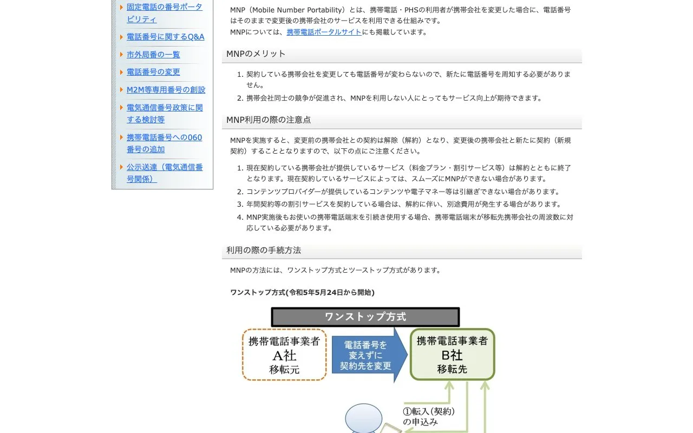
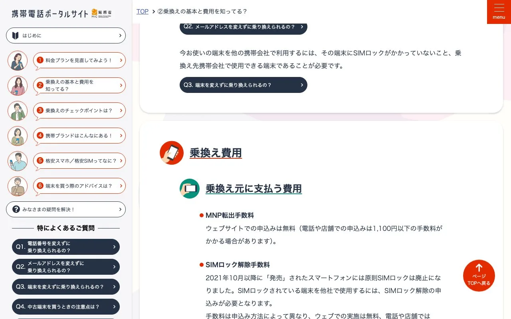

携帯電話は、MNP（携帯電話番号ポータビリティ）という仕組みを使うと、今の電話番号のまま別の携帯会社に乗り換えられます。手続き方法には、新しい契約だけで完了する「ワンストップ方式」と、今の会社で予約番号をもらってから手続きする「ツーストップ方式」があり、MNP転出手数料はウェブ申込みなら無料です。この記事では、総務省の公式情報にもとづいて、MNPのしくみ・費用・手順を整理します。
01MNPとは：電話番号をそのままに携帯会社を変える仕組み
MNP（Mobile Number Portability）とは、携帯電話・PHSの利用者が携帯会社を変更した場合に、電話番号はそのままで変更後の携帯会社のサービスを利用できる仕組みです。契約している携帯会社を変更しても電話番号が変わらないので、新たに電話番号を周知する必要がありません。携帯会社同士の競争が促進されるため、MNPを利用しない人にもサービス向上が期待できるとされています。
02手続き方法は2つ：ワンストップ方式とツーストップ方式
MNPの手続き方法には、ワンストップ方式とツーストップ方式があります。

ワンストップ方式は、令和5年5月24日から始まった方法です。移転先の携帯会社のウェブサイトで契約を申し込むと、自動的に今の携帯会社のサイトに移り、マイページなどにログインして解約の説明を受けます。解約が確認できると、再び移転先のサイトに戻って契約を進めます。契約が完了して回線が切り替わると、今の携帯会社との契約は自動で解約されます。
ツーストップ方式は従来からの方法です。今の携帯会社にMNP予約番号の発行を申請し、説明を受けて予約番号を受け取ります。その番号を持って新しい携帯会社に新規契約を申し込み、手続きが終わると完了です。
03乗り換えにかかる費用
| 費用 | 金額 |
|---|---|
| MNP転出手数料（ウェブ申込み） | 無料 |
| MNP転出手数料（電話・店舗） | 1,100円以下の場合あり |
| SIMロック解除手数料（ウェブ） | 無料 |
| SIMロック解除手数料（電話・店舗） | 3,300円かかる場合が多い |
| 乗換え先の契約事務手数料・SIMカード代金 | 概ね3,300円前後 |

MNP転出手数料は、令和3年4月1日の制度改正で原則無料になりました。ただしウェブでの申込みが無料で、電話や店舗では手数料がかかる場合があります。2021年10月以降に発売されたスマートフォンは原則SIMロックが廃止されていますが、それより前に発売された端末で今もSIMロックがかかっている場合は、解除の申込みが必要です。契約期間が決まっているプランを途中で解約すると、違約金が発生することもあります。
04乗り換えの手順（9ステップ）
- 現在の利用状況を確認する（データ通信量・通話料・オプション・家族割などの詳細を確認する）
- 乗換え候補を見つける（自分の使い方に合った携帯ブランド・料金プランを探す）
- 乗換え後の料金と、現在の料金を比較する（家族割や固定回線のセット割も含めて比較する）
- 端末をそのまま使うか、新しい端末を購入するか決める
- 乗換え元に電話番号持ち運び（MNP）予約番号等を申し込む
- 乗換え先で契約を申込み、乗換え手順を確認する
- 乗換え先で使用する端末とSIMを準備する
- 回線の切り替え（短い場合は数分で完了する）
- 乗換え先の契約完了（回線の切り替え完了と同時に、今までの契約が解除される）
注意MNP予約番号の有効期限内に乗換え先の契約が完了しなかった場合、乗換え元の契約はそのまま続きます。
05注意点：今のサービスは解約と同時に終了する
MNPを実施すると、今の携帯会社との契約は解除され、新しい携帯会社と新規契約することになります。今の携帯会社が提供している料金プランや割引サービスは、解約と同時に終わります。
コンテンツプロバイダーが提供しているコンテンツや電子マネーなどは、引き継げない場合があります。年間契約などの割引サービスを契約している場合は、解約にともなって別の費用がかかることもあります。今の端末をそのまま使う場合は、その端末が乗り換え先の携帯会社の周波数に対応している必要があります。
06まとめ
結論MNPを使えば、電話番号を変えずに携帯会社を乗り換えられます。費用はウェブ申込みなら原則無料ですが、SIMロック解除や契約事務手数料がかかる場合もあるので、乗り換え前に確認しておきましょう。
- MNPとは電話番号そのままで携帯会社を変更できる仕組み
- 手続き方法ワンストップ方式（新しい会社の手続きだけ）とツーストップ方式（予約番号を取得）
- MNP転出手数料ウェブ申込みは無料
- SIMロック解除手数料ウェブは無料、電話・店舗は3,300円かかる場合あり
- 乗換え先の契約事務手数料概ね3,300円前後
この記事は、2026年11月21日時点の総務省公式情報にもとづいています。実際の手数料や手続きは、契約している携帯会社と乗り換え先の携帯会社の案内で確認してください。